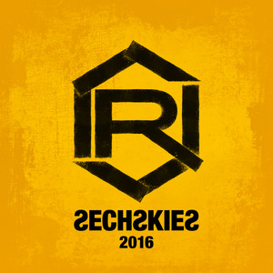
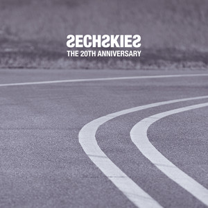
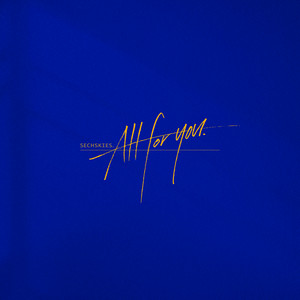

音軌才是與這個名字最直白相遇的方式——以下先收精選年表與深水連結。
回歸後的數位單曲與專輯，是現在進行式的聲紋紀錄；耳機調大聲一格，就能把「新篇章」接住。
| 封面 | 年份 | 專輯／作品 | 主打歌 |
|---|---|---|---|
|
 |
2016 | 數位單曲 | Three Words (三個詞) |
|
 |
2017 | ANOTHER LIGHT | Something Special / Smile |
|
 |
2020 | ALL FOR YOU | ALL FOR YOU |
主打的記憶點、b-side 的伏筆、舞步與應援口號——想一次收進收藏庫，往這張整理頁走。
| 年份 | 專輯／作品 | 主打歌 |
|---|---|---|
| 1997 | 學園別曲 | 學園別曲 / 男兒之路 (Pom Saeng Pom Sa) |
| 1998 | Road Fighter | Road Fighter / Couple |
| 1999 | Com'Back | Com'Back |